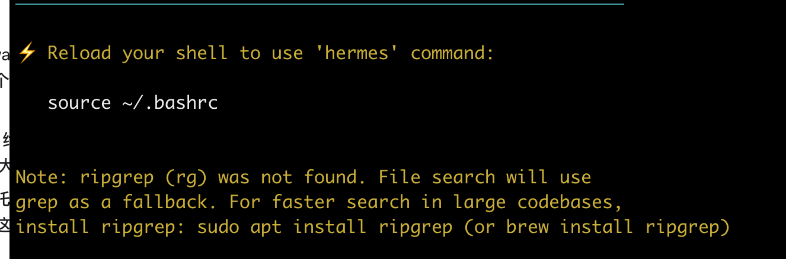

Hermes Agent 是 Nous Research 推出的开源 AI Agent 项目，重点能力包括跨会话记忆、技能沉淀、多平台消息网关、模型路由、定时任务和子代理协作。它更适合被部署成长期运行的个人或团队助手，而不是只在一次命令行会话中临时使用。
本教程整理 Hermes Agent 的常见部署方式：本机一键安装、Dashboard 图形界面、Gateway 后台服务、NAS 或服务器 Docker Compose、源码安装，以及 systemd 托管和卸载维护。
安全提示：Dashboard 示例使用
--insecure，该模式没有身份验证，可能暴露 API Key 和本机能力。只建议在可信内网或本机临时调试时使用；如果需要公网访问，应先放到具备认证、TLS 和访问控制的反向代理之后。
适用环境
推荐环境如下：
- Linux 服务器、NAS、macOS 或 WSL2。
- Python 3.11 或可由安装脚本自动准备的 Python 环境。
- 可访问模型供应商 API，例如 OpenRouter、NVIDIA API、OpenAI 兼容接口等。
- 如果使用 Docker 部署，需要 Docker Engine 和 Compose。
首次部署前建议准备一个普通用户账号，不要直接使用 root 运行长期 Agent 服务。本文统一使用 hermesuser 作为部署用户示例。只有安装 systemd 服务、调整防火墙或管理 Docker 时才使用 sudo。
创建独立普通用户
服务器长期运行时，先创建独立用户 hermesuser：
sudo useradd -m -s /bin/bash hermesuser
sudo usermod -aG sudo hermesuser第二条命令把 hermesuser 加入 sudo 用户组，让它具备通过 sudo 安装系统依赖、启用 systemd 服务和管理必要系统配置的权限。之后 Hermes Agent 的安装、配置、Gateway 和 Dashboard 都放在 hermesuser 账号下完成。这样可以降低 Agent 服务对系统其他目录的访问范围。
基础环境配置：sudo 免密设置
为了在后续安装脚本运行中避免频繁输入密码，可以为 hermesuser 开启 sudo 免密权限。
先编辑 sudoers 配置：
sudo visudo在文件末尾添加：
hermesuser ALL=(ALL) NOPASSWD: ALL前面已经把 hermesuser 加入 sudo 用户组，这里再用 sudoers 精确配置免密规则。这样后续执行 sudo apt install ...、sudo systemctl ...、sudo nano /etc/systemd/system/... 这类系统级操作时，既有 sudo 权限，也不会反复要求输入密码。
保存并退出：
| 编辑器 | 保存退出方法 |
|---|---|
| nano | 按 Ctrl+O 保存，按 Enter 确认，再按 Ctrl+X 退出 |
| vim | 输入 :wq 保存退出 |
退出后切换到 hermesuser：
sudo su - hermesuservisudo 保存成功后，hermesuser ALL=(ALL) NOPASSWD: ALL 这条按用户名授权的规则会立即对新的 sudo 命令生效，不需要重启系统。前面 sudo usermod -aG sudo hermesuser 这条“加入 sudo 组”的组成员关系通常需要重新登录后才完整生效，所以这里直接重新切换到 hermesuser 再验证。
再测试 sudo 免密是否生效：
sudo -n true && echo "sudo 免密已生效"如果命令没有提示输入密码，并输出 sudo 免密已生效，说明配置正确。后续安装 Hermes Agent、安装依赖、启用 systemd 服务时就不会被 sudo 密码反复打断。
Hermes Agent 的核心能力
Hermes Agent 与传统“安装一组固定技能的 Agent”不同，它强调使用过程中的持续学习：
| 能力 | 说明 |
|---|---|
| 持久化记忆 | 可跨会话保存偏好、稳定事实和工作习惯 |
| Skills | 将可重复流程沉淀成技能，便于后续复用 |
| 多模型路由 | 可按任务切换或配置不同模型 |
| 消息网关 | 支持 Telegram、Discord、Slack、WhatsApp、Signal、钉钉、飞书、企业微信等入口 |
| 定时任务 | 可通过 Cron 方式执行周期任务 |
| 子代理并行 | 复杂任务可拆分后并行处理，再汇总结果 |
| Dashboard | 提供浏览器中的配置和聊天入口 |
如果与 OpenClaw 这类技能驱动工具比较，可以粗略理解为：OpenClaw 更像“给 Agent 安装技能”，Hermes Agent 更像“让 Agent 在使用中积累记忆和技能”。实际部署时，记忆、Skills 和权限策略需要谨慎维护，避免让临时信息长期影响后续行为。
方式一：一键安装
一键安装适合 Linux、macOS 和 WSL2。前面已经切到 hermesuser，后续命令都在这个普通用户下执行：
curl -fsSL https://raw.githubusercontent.com/NousResearch/hermes-agent/main/scripts/install.sh | bash安装脚本通常会准备 uv、虚拟环境和 Hermes Agent 所需依赖。安装完成后，重新加载 Shell 配置：
source ~/.bashrc如果使用 zsh，也可以根据安装脚本提示加载对应的 ~/.zshrc。
安装完成后还要留意终端提示。如果看到 ripgrep (rg) was not found，说明系统缺少 rg。Hermes/Codebot 在大代码库里搜索文件时会优先使用 ripgrep，没有它也能 fallback 到 grep，但速度和体验都会差很多。

Debian、Ubuntu 和 Proxmox LXC 常用：
sudo apt install ripgrep -ymacOS 常用：
brew install ripgrepAlpine 常用：
sudo apk add ripgrep装完后确认：
rg --version首次启动与 API Key 配置
命令行交互模式：
hermes首次启动时会进入初始化流程，引导填写模型供应商、API Key 和默认模型。也可以显式执行：
hermes setupAPI Key 通常会写入：
~/.hermes/.env配置文件通常位于：
~/.hermes/config.yaml数据目录通常包含：
~/.hermes/cron/
~/.hermes/sessions/
~/.hermes/logs/初始化后先做一次真实模型连通性测试，不要只看安装命令是否成功：
hermes doctor
hermes -z "请只回复：模型连通性测试通过"hermes doctor 只能说明当前机器上某些 provider/key 可用，不一定等于 Gateway 正在使用的默认模型一定可用。真正要确认默认模型，应同时看：
hermes config show | sed -n '/^model:/,/^[^ ]/p'
hermes -z "请只回复：模型连通性测试通过"如果 Telegram 里出现下面这种提示：
The model provider failed after retries. I kept raw provider details out of chat; check gateway logs for diagnostics.说明 Gateway 本身不一定坏了，通常是模型供应商、余额、API Key、模型名或 base_url 有问题。先看 user service 日志：
journalctl --user -u hermes-gateway.service -n 120 --no-pager -o cat常见原因：
| 日志现象 | 含义 | 处理 |
|---|---|---|
HTTP 402: Insufficient Balance |
模型账户余额不足或额度不可用 | 给对应 provider 充值，或切换可用模型 |
401 / Unauthorized |
API Key 不正确或未加载 | 检查 ~/.hermes/.env 的环境变量名和值 |
404 / model not found |
模型名不对或当前 provider 不支持 | 换成 provider 支持的模型名 |
| connection / timeout | 网络或 base_url 不通 | 检查 DNS、代理、防火墙和 model.base_url |
日志里可能包含 provider、model、base_url 和错误码；不要把 API Key、Telegram Token、SSH 密钥贴到聊天或公开文档里。
如果使用 OpenAI-compatible 中转接口，并把 model.provider 设置为 custom，不要只假设 OPENAI_API_KEY 一定会被当前版本读取。更稳妥的做法是先查看 Hermes 当前版本的自定义 provider 说明；部分版本会按 base_url 主机名派生环境变量名，例如 https://api.example.com/v1 可能读取 EXAMPLE_API_KEY，也可以在受控私有机器上写入 model.api_key。生产环境推荐把真实密钥放在 ~/.hermes/.env，文档和聊天里只写变量名，不写密钥值。
Dashboard 图形界面
如果希望通过浏览器完成配置和聊天，可以启动 Dashboard：
hermes dashboard --host 0.0.0.0 --port 9119 --tui --insecure随后访问：
http://服务器IP:9119常见配置流程：
- 打开 Dashboard。
- 进入
Settings或Model。 - 在 API Keys 区域填入模型供应商密钥，例如 NVIDIA API Key。
- 在 Model 区域选择默认模型，例如
minimaxai/minimax-m2.7或其他可用模型。 - 回到 Chat 页面测试一次普通对话。
Dashboard 只适合在可信网络中使用。需要远程访问时，应优先使用 VPN、SSH 隧道或带认证的反向代理。
Gateway 后台服务
Gateway 适合长期运行，用来接入 Telegram、Discord、Slack 等消息平台，也可以承载后台任务。
安装前先确认运行身份。如果已经切到 hermesuser，并且目标是让 Telegram Gateway 在这个普通用户下面长期运行，优先选择当前用户级 Gateway。不要因为系统级服务看起来更“正式”就选它；系统级服务通常权限范围更大，不适合普通用户随手选择。
执行安装：
hermes gateway install
hermes gateway start
hermes gateway status常用命令：
| 命令 | 作用 |
|---|---|
hermes gateway start |
启动后台服务 |
hermes gateway stop |
停止后台服务 |
hermes gateway restart |
重启后台服务 |
hermes gateway status |
查看服务状态 |
hermes gateway uninstall |
移除后台服务 |
如果 Gateway 用来接 Telegram bot，而你希望聊天窗口保持安静，但长任务时仍能看到它确实在工作，可以先用下面这组快捷命令：
hermes config set approvals.mode smart
hermes config set command_allowlist '["stop/restart system service"]'
hermes config set telegram.reply_to_mode off
hermes config set telegram.gateway_restart_notification true
hermes config set platforms.telegram.reply_to_mode off
hermes config set platforms.telegram.gateway_restart_notification true
hermes config set platforms.telegram.extra.disable_link_previews true
hermes config set display.tool_progress off
hermes config set display.interim_assistant_messages false
hermes config set display.background_process_notifications off
hermes config set display.cleanup_progress true这几项分别用于切到智能审批、放宽停止/重启服务这类操作的审批、关闭 Telegram 回复引用、保留 gateway 上线提醒、关闭链接预览、关闭工具进度和中间态消息，并清理后台进程通知。优先使用 hermes config set 这类官方命令，让 Hermes 自己维护配置文件结构；手改 config.yaml 只作为核对或兜底。
如果是在导入新机器人、批量恢复配置或初始化 profile，确认风险可控时可以先临时开启 YOLO，省掉一条条确认：
hermes config set approvals.mode yolo批量操作完成后再切回智能审批：
hermes config set approvals.mode smart为了避免当前 Telegram 回复还没发完就被 gateway 重启打断，建议改完后安排一个延迟重启：
systemd-run --user --on-active=5s systemctl --user restart hermes-gateway如果服务名不是 hermes-gateway，先查看实际服务名：
systemctl --user list-units 'hermes*' --no-pager这样日常在 Telegram 里对话时，不会频繁看到工具调用或引用上一句话的气泡；gateway 重启/上线时仍会有一条提醒，方便确认机器人恢复在线。
如果当前 Hermes 版本已经使用新版 config.yaml 结构，也建议同时检查这些字段：
display:
tool_progress: off
cleanup_progress: true
interim_assistant_messages: false
long_running_notifications: true
busy_ack_detail: true
background_process_notifications: off
platforms:
telegram:
tool_progress: off
cleanup_progress: true
interim_assistant_messages: false
long_running_notifications: true
busy_ack_detail: true
background_process_notifications: off
streaming:
enabled: false
platforms:
telegram:
reply_to_mode: off
gateway_restart_notification: true
guest_mode: false
extra:
disable_link_previews: true更完整的恢复和参数说明可以参考：Hermes Telegram 安静模式恢复手册 和 Hermes Agent config.yaml 中文配置说明。
安装后优化清单
刚装好的 Hermes 不建议直接让它“自己随便优化”。更稳的做法是给它一个明确任务：先读取官方配置说明和本机配置，再只改确认存在、能解释清楚的字段，最后重启并验证。
可以把下面这段直接发给刚配置好的 Hermes：
你现在运行在一台刚安装好的 Hermes Agent 服务器上。请先做一次保守的安装后优化，不要猜测不存在的配置字段。
目标：
1. 让 Telegram bot 保持安静，只显示最终回答、必要心跳和心跳里的工作进度细节。
2. 保留危险操作确认，不开启全局 yolo。
3. 确认 Gateway 能长期运行并能随用户会话/系统重启恢复。
4. 确认 Hermes 的配置、环境变量、sessions、memory、skills、cron 和 logs 已纳入备份范围。
5. 不把 Dashboard 或 Gateway API 无认证暴露到公网。
执行要求：
1. 先读取本机配置和当前版本帮助，例如 ~/.hermes/config.yaml、~/.hermes/.env、`hermes config --help`、`hermes gateway --help`，以及当前版本能找到的 cli-config.yaml.example。如果机器可以联网，再对照 Hermes 官方 Configuration Options。
2. 修改前先备份：
cp ~/.hermes/config.yaml ~/.hermes/config.yaml.bak.$(date +%Y%m%d-%H%M%S)
3. 优先使用 Hermes 官方提供的 `hermes config set` 命令调整参数，保持配置文件规范；不要优先手写 YAML。请按功能执行下面 11 处调整：
hermes config set approvals.mode smart
# 开启智能审批模式。低风险命令自动放行，高风险命令仍然提示确认。比 manual 少打扰，比 YOLO/off 安全。
hermes config set command_allowlist '["stop/restart system service"]'
# 加入命令审批白名单，允许“停止/重启系统服务”这类操作更容易通过审批。注意：这是偏权限放宽的配置，新环境里如果要更保守，可以先不加。
hermes config set display.background_process_notifications off
# 关闭后台进程通知。避免后台任务、进程状态变化频繁打扰 Telegram。
hermes config set display.cleanup_progress true
# 开启清理进度信息。通常用于让界面或消息里的进度展示更干净，减少残留进度噪声。
hermes config set display.interim_assistant_messages false
# 关闭中间态助手消息。减少“我正在处理/中间进度”这类临时消息，更安静。
hermes config set display.tool_progress off
# 关闭工具调用进度提示。减少 Telegram 里显示工具执行过程的噪声，只看最终结果。
hermes config set platforms.telegram.extra.disable_link_previews true
# 关闭 Telegram 链接预览。避免发送链接时自动展开预览，消息更清爽。
hermes config set platforms.telegram.gateway_restart_notification true
# 开启 platforms.telegram 路径下的网关重启/上线提醒。建议和 telegram.gateway_restart_notification 一起设置，避免不同加载路径漏生效。
hermes config set platforms.telegram.reply_to_mode off
# 关闭 Telegram 回复引用模式。机器人回复时不引用或挂在线程式回复到原消息，聊天界面更干净。
hermes config set telegram.gateway_restart_notification true
# 开启 Telegram 顶层配置里的网关重启/上线提醒。重启后会收到类似 “Gateway online” 的上线提示。
hermes config set telegram.reply_to_mode off
# 关闭 Telegram 顶层配置里的回复引用模式。和 platforms.telegram.reply_to_mode off 建议一起设置。
4. 导入机器人、批量恢复配置或初始化 profile 时，如果确认当前环境风险可控，可以先临时开启 YOLO 来减少确认：
hermes config set approvals.mode yolo
批量操作完成后必须切回：
hermes config set approvals.mode smart
5. 检查 Telegram 入口权限，优先使用 pairing、allowed users 或 allowed chats，不要设置 allow all users。
6. 检查 platform_toolsets。如果 Telegram 是日常入口，不要默认给不可信群聊开放过强工具；至少说明当前 Telegram 可用哪些工具集。
7. 检查 systemd user 服务：
systemctl --user status hermes-gateway.service --no-pager
systemctl --user list-units 'hermes*' --no-pager
8. 如果需要长期运行，确认当前 Linux 用户已执行 loginctl enable-linger，或者说明为什么不需要。
9. 修改后运行：
hermes doctor
hermes gateway status
10. 做一次真实模型连通性检查。不要只看 hermes doctor；请同时确认当前默认模型配置，并用一次性 prompt 实测：
hermes config show | sed -n '/^model:/,/^[^ ]/p'
hermes -z "请只回复：模型连通性测试通过"
如果 Telegram 或日志出现 provider failed，请查看 gateway 日志并只汇报 provider、model、base_url、HTTP 状态码和简短错误原因，不要打印任何 token。常见例子：HTTP 402 通常是模型账户余额不足，不是 gateway 挂了。
11. 如果需要让新配置立即生效，不要在当前 Telegram 回复还没发完时直接重启 gateway。请优先安排延迟重启，例如：
systemd-run --user --on-active=5s systemctl --user restart hermes-gateway
如果服务名不同，先用下面命令确认：
systemctl --user list-units 'hermes*' --no-pager
12. 最后给出变更摘要，列出改了哪些文件、哪些字段、哪些命令成功、模型连通性是否通过、是否已安排延迟重启、哪些地方需要人工确认。说明：如果 gateway 重启导致当前 Telegram 会话短暂中断，这是预期行为。
限制：
- 不要删除现有配置。
- 不要打印 API Key、Telegram Token、SSH 密钥、cookie 或密码。
- 不要把 Dashboard 的 --insecure 服务暴露到公网。
- 不要启用全局 yolo。
- 不要运行破坏性命令。人工复核时重点看这些结果：
| 项目 | 期望结果 |
|---|---|
hermes doctor |
没有关键错误 |
hermes gateway status |
Gateway 正常运行 |
| 模型连通性 | CLI 或 Telegram 能完成一次真实回复 |
| 延迟重启 | 已安排或明确告诉用户需要手动执行 |
| Telegram 测试消息 | 返回最终回答；长任务时有带进度细节的心跳 |
| Telegram 权限 | 不是所有人都能随便调用 |
~/.hermes/ |
已纳入备份 |
| Dashboard | 没有无认证暴露到公网 |
platform_toolsets |
Telegram 工具集符合实际风险 |
克隆一个写代码专用 Telegram 机器人
如果第一个 Telegram 机器人已经按上面的安静模式和权限策略优化过，可以让它基于当前配置克隆一个独立 profile，用第二个 Telegram bot 专门写代码。这个 code profile 可以使用另一套更适合代码的大模型，和默认日常机器人分开。这样日常助手和开发助手分开，避免模型、记忆、sessions、skills、cron 和权限策略互相污染。
先准备两样东西：
- 在 BotFather 创建第二个 bot，拿到新的
TELEGRAM_BOT_TOKEN。不要复用第一个 bot token。 - 准备代码机器人专用的大模型配置，例如 provider、model、base_url 和对应 API Key。不要默认沿用第一个机器人的模型。
然后把下面这段发给第一个 Hermes：
请帮我基于当前默认 Hermes 配置，创建一个专门写代码的 Telegram 机器人 profile。
目标：
1. 使用官方 profile 命令从当前默认 profile 克隆一个新 profile，名称用 code。
2. 如果默认 profile 已经配置好，可以用普通 clone 作为起点，复用基础配置和安静模式；不要使用 `--clone all` 直接全量复制，避免把原机器人的 Telegram token、模型和环境引用也一起带过去。
3. 新 profile 使用单独的 Telegram bot token，不要复用默认机器人的 token。
4. 新 profile 使用单独的大模型配置，不要沿用默认机器人的 model/provider/base_url/API key。模型用于写代码、排障和服务器维护。
5. 新 profile 的 sessions、memory、skills、cron 和 gateway 服务要和默认 profile 分开。
6. 新 profile 面向写代码、排障、服务器维护和技术任务，但 Telegram 里仍然保持安静。
7. 新 profile 要有单独的写代码人格/说明，不要完全沿用默认日常助手的性格。它可以中文、技术向、简洁、主动验证，适合开发、排障和运维。
执行步骤：
1. 先读取官方 profile/gateway/config/tools 文档或本机帮助，确认当前版本的准确命令和配置 schema：
hermes --version
hermes profile --help
hermes gateway --help
hermes config --help
hermes tools --help
hermes profile list
2. 修改前先检查是否已经有等价备份。列出：
ls -lh ~/.hermes/config.yaml ~/.hermes/config.yaml.bak.* 2>/dev/null
如果最近的备份和当前 `~/.hermes/config.yaml` 内容一致，就不要二次备份；如果没有备份，或当前配置已经有新改动，再执行：
cp ~/.hermes/config.yaml ~/.hermes/config.yaml.bak.$(date +%Y%m%d-%H%M%S)
3. 如果当前版本提供配置迁移或校验命令，例如 `hermes config migrate`，只在已经确认有可用备份后执行。不要手工改 `_config_version`，不要猜新字段。
4. 如果接下来要连续创建 profile、写入模型和 gateway 配置，可以临时减少确认打断；但不要长期保持全局 YOLO。当前这次批量操作前可以临时设置：
hermes config set approvals.mode off
批量操作结束后必须恢复：
hermes config set approvals.mode smart
如果我是从 shell 里手动启动一个新的临时 Hermes 会话，也可以改用一次性启动参数 `hermes --yolo`，任务结束退出即可；不要把它当作长期配置。
如果中途失败或不确定下一步，也先恢复：
hermes config set approvals.mode smart
5. 创建 profile。优先使用官方 clone 命令，例如：
hermes profile create code --clone --description '写代码、排障和运维专用 Hermes profile；继承默认 profile 的基础配置、安静模式和安全策略。'
不要使用 `--clone all`，除非你明确确认当前版本不会复制不该共用的 token、模型、sessions、memory 或 gateway state。
6. 检查新 profile 配置文件路径，通常类似：
~/.hermes/profiles/code/config.yaml
同时确认 code profile 的 `.env` 路径，通常类似：
~/.hermes/profiles/code/.env
`.env` 权限应尽量收紧：
chmod 600 ~/.hermes/profiles/code/.env
7. 把新 Telegram bot token 配到 code profile 对应的环境或 gateway 配置里。不要覆盖默认 profile 的 Telegram token。检查时只列出变量名，不要打印变量值，例如只汇报存在 `TELEGRAM_BOT_TOKEN` 之类的键名。
8. 给 code profile 配置专用大模型。请先询问我要使用哪个 provider、model、base_url 和 API key 环境变量名；如果我已经提供，就只写入 code profile，不要改默认 profile。配置完成后明确列出 code profile 当前使用的模型，例如：
model.provider = <code-provider>
model.default = <code-model>
model.base_url = <code-base-url>
API key 从 code profile 对应 .env 或环境变量读取，不要明文打印。
9. 普通 `--clone` 可能会继承默认 profile 的人格、SOUL/说明或 display personality。请检查 code profile 是否还是日常助手口吻；如果是，就单独调整成写代码机器人。目标风格：
- 中文回复
- 技术向但不啰嗦
- 先读项目和当前配置，再动手
- 优先使用 rg、git、测试和官方命令
- 修改前说明风险，修改后验证结果
- 适合开发、排障、服务器维护和自动化任务
如果当前版本支持配置项，可以把 code profile 的显示风格设成 technical；如果使用 SOUL.md 或 profile 说明文件，就只改 code profile 自己的说明文件，不要改默认 profile。
10. 普通 `--clone` 理论上已经继承默认 profile 的安静模式。不要无脑重写整段配置；只检查 code profile 是否已经继承这些关键项，缺什么再用 `hermes -p code config set ...` 补什么：
display.tool_progress = off
display.interim_assistant_messages = false
display.background_process_notifications = off
platforms.telegram.reply_to_mode = off
platforms.telegram.extra.disable_link_previews = true
telegram.reply_to_mode = off
如果默认 profile 已经开启 gateway 上线提醒，也让 code profile 保持一致：
telegram.gateway_restart_notification = true
platforms.telegram.gateway_restart_notification = true
11. 为 code profile 检查工具权限和 Telegram 平台工具集。写代码 profile 可以保留 terminal、file、web、browser、skills、todo 等开发工具，但不要开启全局 yolo；危险操作仍需确认。如果 clone 后工具状态已经符合预期，不要重复改。重点核对：
hermes -p code tools list
platform_toolsets.telegram 是否符合风险预期
如果这个 bot 只给自己私聊使用，可以保留开发工具；如果以后会进群，必须单独收窄 Telegram 可用工具。
12. 配置 Telegram 访问授权。优先使用当前版本支持的 pairing、allowed users 或 allowed chats，不要让任何人都能调用 code profile。至少确认：
- 第二个 Telegram bot token 只属于 code profile
- code profile 只允许我的 Telegram 用户或指定私聊
- 如果进群，先限制群 ID 或只响应 mention/thread
13. 安装或启动 code profile 的 gateway。若 Hermes 支持 profile 参数，请使用 code profile 对应方式，例如：
hermes --profile code gateway install
hermes --profile code gateway start
hermes --profile code gateway status
如果当前版本命令不同，按 `hermes gateway --help` 的官方输出执行。
14. 检查 systemd user 服务名，可能类似：
hermes-gateway-code.service
请用 `systemctl --user list-units 'hermes*' --no-pager` 确认，不要凭空假设。
15. 在第二个 Telegram bot 里发送 `/sethome`，把当前聊天设为 code profile 的 home channel。
16. 先做 CLI 侧真实连通性测试，再做 Telegram 测试。不要只看配置文件：
hermes --profile code -z "请只回复：code profile 模型连通性测试通过"
然后在第二个 Telegram bot 里发一句测试消息，确认回复来自 code profile。
17. 运行：
hermes --profile code doctor
hermes --profile code gateway status
如果失败，查看对应 gateway 日志，但只汇报 provider、model、base_url、HTTP 状态码和简短错误原因，不要打印 token。
18. 最后再次确认审批模式已经恢复为 smart，并汇报：
- 创建了哪个 profile
- 新 profile 配置文件路径
- 新 profile .env 路径和权限是否正确，不打印密钥值
- code profile 使用的 provider、model 和 base_url
- code profile 的人格/说明是否已调整为写代码、排障和运维专用
- code profile 的 Telegram 访问授权是否已限制
- code profile 的工具集和 platform_toolsets.telegram 是否符合预期
- 新 gateway 服务名
- 第二个 Telegram bot 是否已连接
- CLI 和 Telegram 真实连通性测试是否通过
- 安静模式是否生效
- 当前 `approvals.mode` 是否已恢复为 smart
- 还有哪些需要我手动确认
限制：
- 不要打印 Telegram bot token 或任何 API Key。
- 不要覆盖默认 profile 的配置和 token。
- 不要修改默认 profile 的模型配置。
- 不要删除默认机器人的 gateway 服务。
- 不要启用全局 yolo。
- 不要运行破坏性命令。人工复核时，重点确认两个机器人确实分开：
| 检查项 | 期望结果 |
|---|---|
| 默认 bot | 仍然正常回复日常消息 |
| code bot | 使用第二个 Telegram bot token |
| code 模型 | 使用单独的代码大模型，不沿用默认 bot |
| code 人格 | 中文、技术向、适合开发/排障/运维，不完全沿用日常助手 |
| profile 路径 | 存在 ~/.hermes/profiles/code/config.yaml 或当前版本对应路径 |
| env 权限 | ~/.hermes/profiles/code/.env 存在且权限收紧，不打印密钥值 |
| gateway 服务 | 默认服务和 code 服务都能单独 status/restart |
| Telegram Home | 在第二个 bot 里单独执行过 /sethome |
| Telegram 授权 | 只允许指定用户或聊天调用，不是所有人可用 |
| 工具权限 | code profile 有开发工具，但危险操作仍需确认 |
| 平台工具集 | platform_toolsets.telegram 符合私聊或群聊风险边界 |
| 连通性 | CLI 和 Telegram 都完成真实回复测试 |
| 安静模式 | 从默认 profile 继承并核对通过；缺项已补齐 |
| 审批模式 | 临时 YOLO 已关闭，approvals.mode 恢复为 smart |
WSL 的 systemd 支持可能不稳定，如果 Gateway 服务无法正常托管，可以临时使用 tmux：
tmux new -s hermes 'hermes gateway run'方式二：Docker Compose 部署
NAS 或服务器环境可以使用 Docker Compose。先创建目录：
mkdir -p ~/docker/hermes
cd ~/docker/hermes创建 docker-compose.yml：
x-common: &common
image: nousresearch/hermes-agent:latest
volumes:
- ./hermes:/opt/data
environment:
- HERMES_UID=1000
- HERMES_GID=1000
restart: unless-stopped
services:
gateway:
<<: *common
container_name: hermes-gateway
network_mode: host
command: ["hermes", "gateway", "run"]
dashboard:
<<: *common
container_name: hermes-dashboard
ports:
- "127.0.0.1:9119:9119"
command: ["hermes", "dashboard", "--host", "0.0.0.0", "--port", "9119", "--tui", "--no-open", "--insecure"]启动服务：
docker compose up -d查看日志：
docker compose logs -f停止服务：
docker compose down该 Compose 会把 Hermes 数据持久化到当前目录下的 ./hermes。迁移或备份时，应优先备份这个目录。
Dashboard 容器内部监听 0.0.0.0 是为了让 Docker 端口映射能接到服务，但宿主机只绑定 127.0.0.1:9119，不要直接暴露到公网。远程访问时优先用 SSH 隧道：
ssh -L 9119:127.0.0.1:9119 hermesuser@服务器IP然后在本机浏览器访问：
http://127.0.0.1:9119不要为了省事在生产环境里默认允许所有用户访问 Gateway。Telegram、Discord、Slack 等入口应使用 pairing、allowed users 或 allowed chats 做入口限制。
方式三：源码安装
需要开发、调试或使用最新代码时，可以从源码安装：
curl -LsSf https://astral.sh/uv/install.sh | sh
source ~/.bashrc
git clone --recurse-submodules https://github.com/NousResearch/hermes-agent.git
cd hermes-agent
uv venv --python 3.11
source .venv/bin/activate
uv pip install -e ".[all,dev]"
mkdir -p ~/.hermes
echo 'NVIDIA_API_KEY=<替换为你的Nvidia API Key>' > ~/.hermes/.env
hermes setup
hermes如果是 zsh，请按 uv 安装后的提示加载对应配置文件。
Gateway 安装方式选择参考
执行 hermes gateway install 时，如果出现安装方式选择，要按运行身份来选：
| 选项 | 适合场景 | 说明 |
|---|---|---|
| 第一个：当前用户级 Gateway | 推荐给 hermesuser 这类普通用户 |
生成 systemd --user 服务，只在当前用户权限内运行，最适合长期自用和独立普通用户部署。 |
| 第二个：系统级 Gateway | 只建议 root 或明确需要系统级守护进程时使用 | 通常会写入 /etc/systemd/system/，服务以系统服务方式运行，权限范围更大，不适合普通用户随手选择。 |
| 第三个：手动或非 systemd 托管模式 | 没有 systemd、临时调试、WSL 或想放到 tmux/supervisor 里时使用 | 这类模式一般不会自动安装随用户登录启动的服务，需要自己用 hermes gateway run、tmux 或其他进程管理器保持运行。 |
所以如果已经切到 hermesuser，并且目标是让 Telegram Gateway 在这个普通用户下面长期运行，优先选择第一个用户级服务。不要因为第二个看起来更“系统化”就选它；那是给 root 或明确系统级部署准备的。
systemd 托管 Dashboard
如果需要让 Dashboard 随系统启动，可以创建 systemd 服务：
sudo nano /etc/systemd/system/hermes-dashboard.service写入以下内容，并把 User 和 ExecStart 路径替换为实际用户名：
[Unit]
Description=Hermes Dashboard
After=network.target
[Service]
Type=simple
User=你的用户名
ExecStart=/home/你的用户名/.local/bin/hermes dashboard --port 9119 --tui --insecure
Restart=always
[Install]
WantedBy=multi-user.target启用并启动服务：
sudo systemctl daemon-reload
sudo systemctl enable hermes-dashboard
sudo systemctl start hermes-dashboard
sudo systemctl status hermes-dashboard如果希望监听所有网卡，可在 ExecStart 中增加：
--host 0.0.0.0同样需要注意，--insecure 不应直接暴露到公网。
更新、诊断与卸载
查看版本：
hermes --version诊断常见问题：
hermes doctor普通卸载：
hermes uninstall完整卸载：
hermes uninstall --full --yes完整卸载前应备份 ~/.hermes/，尤其是配置文件、API Key、记忆、Skills、sessions 和 logs。
部署检查清单
完成部署后建议逐项确认：
hermes --version能正常输出版本。hermes doctor没有关键错误。- Dashboard 能在预期地址打开。
- 默认模型能完成一次普通对话。
- Gateway 状态正常。
- 如果配置了 Telegram 等消息平台，普通消息和需要确认的操作都能正常流转。
- API Key、配置目录和数据目录已经纳入备份策略。
- Dashboard 没有直接暴露到公网。
- 安装后优化清单已经执行，Gateway 已完成延迟重启或明确安排重启。
- Gateway 日志里没有持续出现 provider 余额不足、鉴权失败、模型不存在或 base_url 连接失败。
维护建议
Hermes Agent 的价值来自长期使用，但长期运行也需要边界：
- Memory 只保存长期偏好、稳定事实和可复用习惯，不保存临时猜测、Token、密码或一次性任务状态。
- Skills 只沉淀明确、可重复、有验证步骤的流程。
- Telegram 等消息入口建议只显示最终回答、带进度细节的长任务心跳和必要确认，完整调试日志保留在 CLI 或日志文件中。
- 破坏性命令、生产环境写操作、DNS、证书、数据库和公网暴露相关操作应保留审批。
- 多用途场景建议拆分 profiles，例如
daily、dev、ops，避免记忆和权限互相污染。
这样部署出来的 Hermes Agent 更适合作为稳定、可维护的长期助手，而不是一次性实验环境。